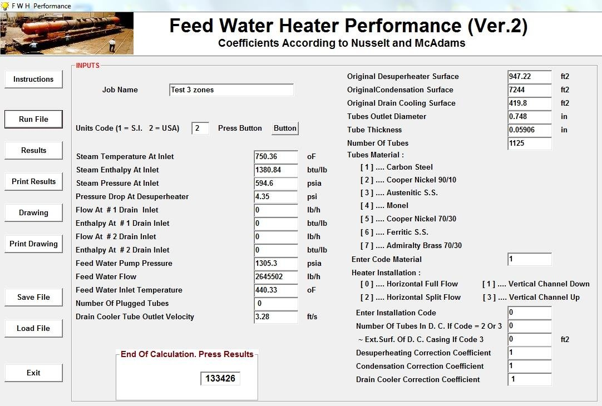
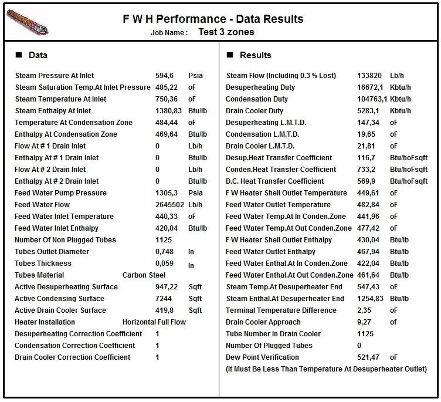
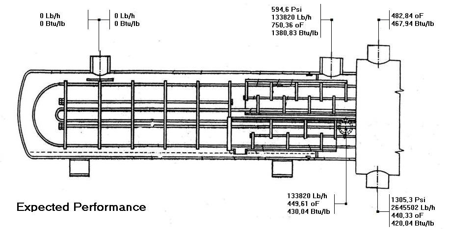

Feedwater Heater Performance Software
Expected performance of an existing feedwater heater from steam conditions, flow and feedwater temperature.
Performance of an existing feedwater heater
This program calculates the expected performance of a feedwater heater from the steam conditions, the feedwater flow and the feedwater inlet temperature, based on the installed surfaces of the equipment. Heat transfer coefficients are calculated according to Nusselt and McAdams. Comparing the expected results with the values measured in the plant shows the performance of each zone and helps to find the possible cause of poor performance.
Data entry
The input window collects the steam temperature, enthalpy and pressure at the inlet, drains, feedwater pump pressure, flow and inlet temperature, the original desuperheating, condensing and drain cooling surfaces, tube diameter, thickness and material, number of tubes and number of plugged tubes, drain cooler velocity, type of installation and the correction coefficients of each zone. S.I. or U.S. units can be used.

Results
The results sheet gives the steam flow, the duty and LMTD of each zone, heat transfer coefficients, feedwater temperature and enthalpy at the outlet of each zone, steam conditions at the desuperheater end, terminal temperature difference, drain cooler approach and dew point verification.


Documentation
See the complete example with every input and results window in the program documentation:
Feedwater Heater Performance – full documentation (PDF)Related programs
- Feedwater Heater – thermal and mechanical design of feedwater heaters per HEI
- In-line Feedwater Heaters Performance – performance of a complete battery of up to six heaters
- Natural Gas Heater – steam heated natural gas heaters with three zones
Condensers, feedwater heaters, deaerators, district heating, natural gas heaters and more, with a description of each program on the home page.
See all programs →